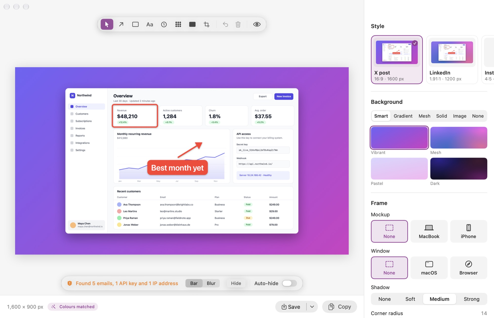
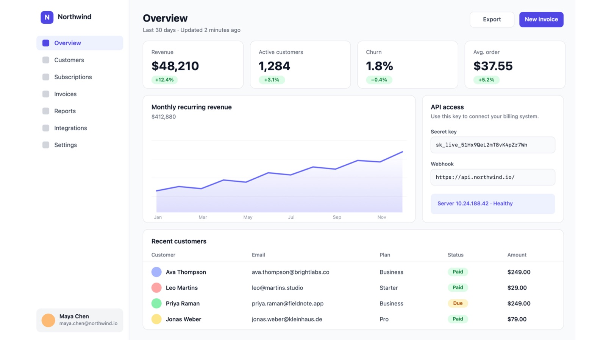
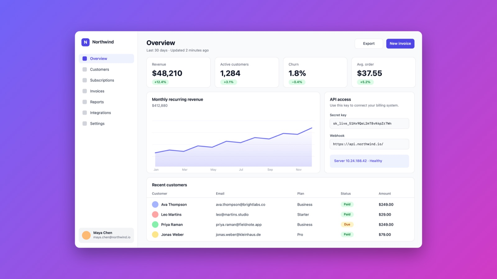
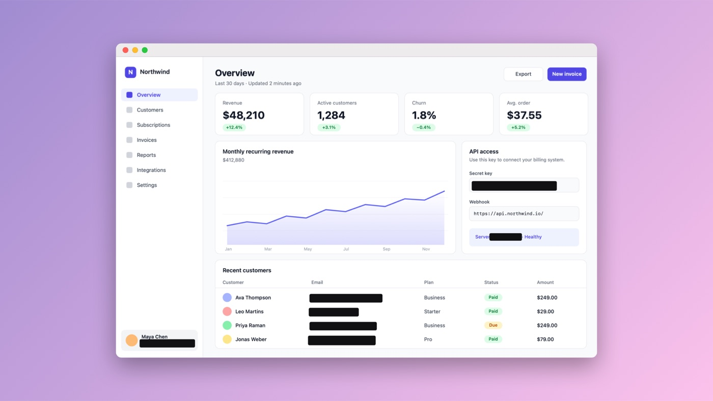
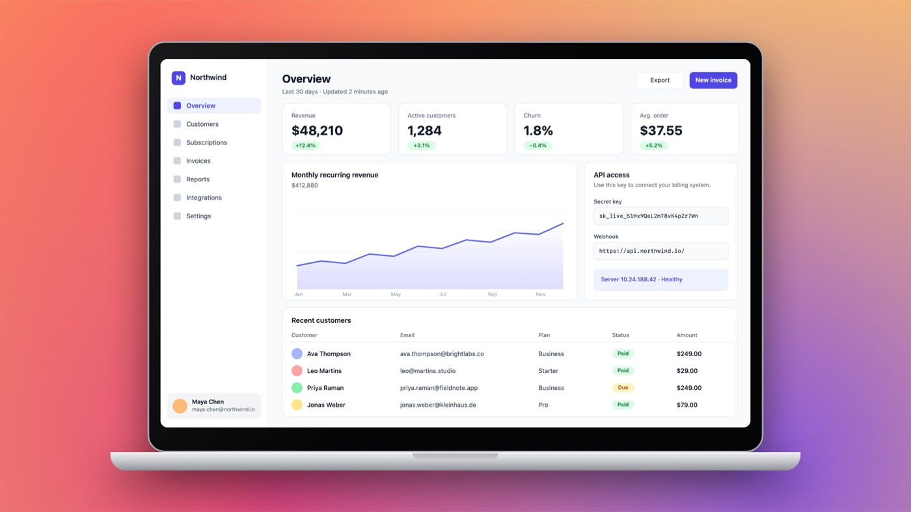
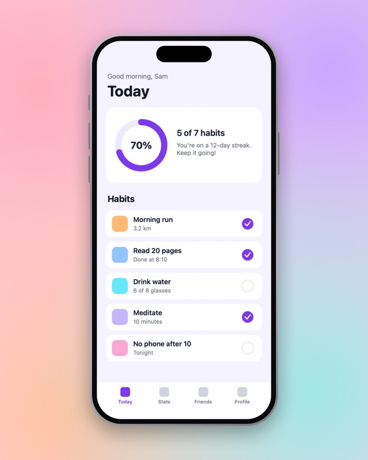
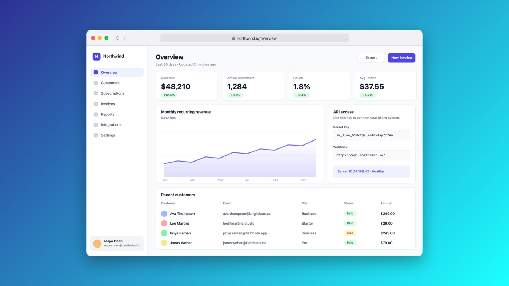

Screenshots that look designed.
Press one shortcut and Screenshotty captures exactly what you point at, then places it on a beautiful background, perfectly centred and ready to post. Free and open source, for every Mac.

From capture to post in seconds
No dragging layers around in a design tool. Screenshotty does the styling the moment you capture.
Press ⌘ ⇧ 2
The screen freezes and the selection snaps to whatever is under your pointer: a panel, a paragraph, a whole window. Click to capture it.
It styles itself
Stray edges are trimmed, margins evened out, and a background is picked to match your screenshot's colours. Change anything with a click.
Copy, save or drag
⌘ C to copy, ⌘ S to save, or drag the picture straight into Slack, X, Figma or Finder.
Same screenshot. Very different impression.
Drag the slider. Left is a normal screenshot, right is what Screenshotty makes from it without any fiddling.


BeforeAfterNever post a secret by accident
Screenshotty reads the text in every capture, on your Mac, and spots what shouldn't be shared. Hide it all with one click, or let it happen automatically.
- Emails, API keys, tokens, card and phone numbers, IP addresses
- Cover with a solid bar or a blur
- Auto-hide covers every future capture for you
- Nothing is ever uploaded

Put it on a MacBook or an iPhone
Real device frames with accurate screen shapes. Wide shots turn the iPhone sideways; app screens get a status bar. One click, no templates to download.
- MacBook, iPhone, macOS window and browser frames
- Your own URL in the browser address bar
- Light and dark versions


One click for every place you post
Ready-made styles for X, LinkedIn, Instagram, launches, mobile apps, laptops and docs, each with the exact size that network wants. Save your own, share it as a file, or keep a folder of team styles everyone uses.
- 16 gradients, 8 mesh wallpapers, solid colours or your own image
- Sizes from 1:1 to 9:16, plus LinkedIn's 1.91:1
- Batch-apply a style to a whole folder

Small details that save real time
Smart selection
Locks onto buttons, panels, text blocks and sections of web pages. Scroll to grow or shrink the selection.
Annotations
Arrows, boxes, labels, numbered steps, blur and redact. They stay attached to your content when you restyle.
Fixes sloppy crops
Slivers of desktop and half-cut content at the edges are removed automatically. Crop by hand any time.
Brand kit
Add your logo and name once and every image carries a subtle watermark.
Re-editable projects
Save a project and reopen it later with the crop, marks and style intact. Perfect for docs you update.
Automatic updates
A notification tells you when a new version is out. One click installs it, and your settings stay put.
Your screenshots never leave your Mac
No account, no cloud, no tracking. Text recognition and secret detection run on your Mac with Apple's own frameworks. The code is open for anyone to check.
Up and running in a minute
Screenshotty is free, so it isn't paid-registered with Apple. macOS asks you to confirm it once, and after that it opens like any other app.
Download
The usual Mac way, with one extra click the first time.
- Open Screenshotty.dmg and drag Screenshotty into Applications.
- Open it. macOS says it can't verify the app. Click Done.
- Go to System Settings → Privacy & Security, scroll down and click Open Anyway. You only do this once.
Terminal
Paste one line and skip the warning entirely.
curl -fsSL https://raw.githubusercontent.com/harrison-bbb/screenshotty/main/scripts/install.sh | bashbrew tap harrison-bbb/screenshotty https://github.com/harrison-bbb/screenshotty && brew install --cask screenshottyThe installer downloads the latest release into Applications and opens it. You can read exactly what it does on GitHub.
Questions, answered
Is it really free?
Yes. No trial, no pro version, no watermark unless you add your own. Screenshotty is open source under the MIT licence, so anyone can use it, including whole teams at work.
Why does macOS warn me the first time?
Apple shows that warning for apps that aren't registered through its $99 a year developer programme. Screenshotty skips that to stay free. Confirming once in Privacy & Security tells your Mac you trust it. If you'd rather avoid the step, use the Terminal installer.
Are my screenshots uploaded anywhere?
No. Everything, including text recognition and secret detection, happens on your Mac. The only thing Screenshotty fetches from the internet is the list of new versions.
How do updates work?
Screenshotty checks for a new version once a day. When there is one, you get a notification and an item in the menu bar menu; one click shows what's new and installs it. Updates are signed, so your Mac only accepts genuine releases. You can turn this off in Settings.
Which Macs does it work on?
Any Mac running macOS 14 Sonoma or later, with Apple Silicon or Intel.
Can my team share a look?
Yes. Save a style and send the file, or point everyone's Screenshotty at a shared folder (Google Drive, Dropbox, iCloud or a git repo) and its styles appear for the whole team. Add your logo in the brand kit for a consistent watermark.
Is there a Windows version?
Not yet. The style format is documented so a Windows version can share styles later. Follow the project on GitHub to hear about it.